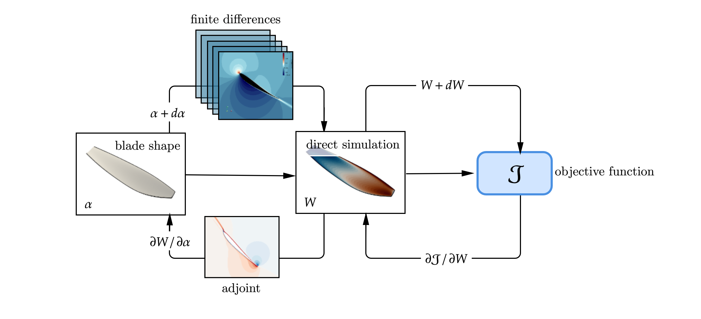

Towards the optimization of propeller tonal noise in the frequency domain using the discrete adjoint method
Numerically optimizing rotors targeting their noise emission is challenging because computing the gradient can be extremely expensive. By leveraging the adjoint of the linearized Navier–Stokes equations, however, it is possible to compute the sensitivity of an objective function to an arbitrary number of parameters with a single computation. In this paper, we derive analytically the linearization of the acoustic pressure generated by a rotating blade, so that it can be used in any adjoint solver to take acoustics into account.